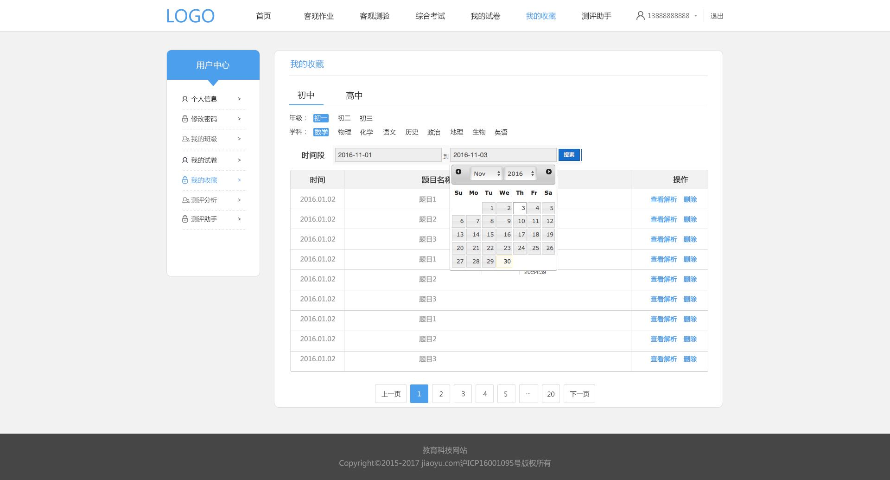

测评分析


如果此登录账号为初中，则此处高中选项不能选择。
此日历最好能找到中文版，日历效果需前端交互设计

默认区间为最近的3个月

点击此处，则显示本试题的正确答案和试题解析，以弹出框形式出现，不影响下面题的格式排列。
试题解析为图文混排格式；

显示题目题干全部，超过长度不能全部显示的，给予一个固定的显示长度，后面用...表示
但是鼠标停放在这个知识点标签时，会以类似于excel中批注的形式出现知识点的全名
需要前端做此交互
每页面，最多显示15道题目
此时间为试卷的生成时间
按时间倒序排列
点击编辑后，进入该试卷的预选页面，不能进入试卷框架页面，即试卷框架一旦确定不能修改
进入重新编辑的试卷，将保留之前已经加入该试卷的预选试题和精选试题。
此为页面说明，字“注”的字体为红色
此页有分页功能，每页最多显示15条